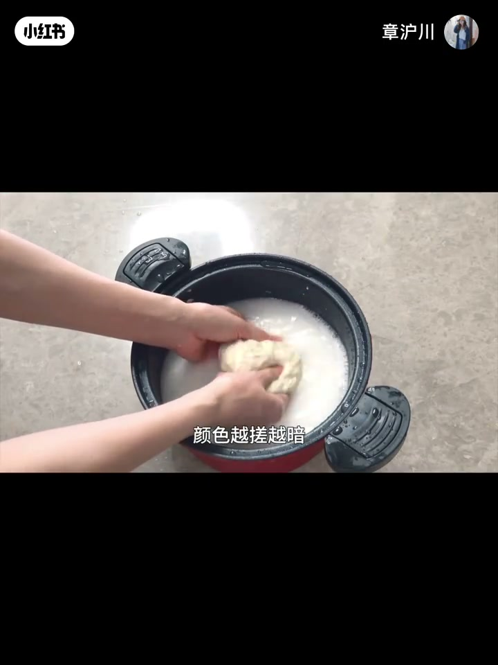
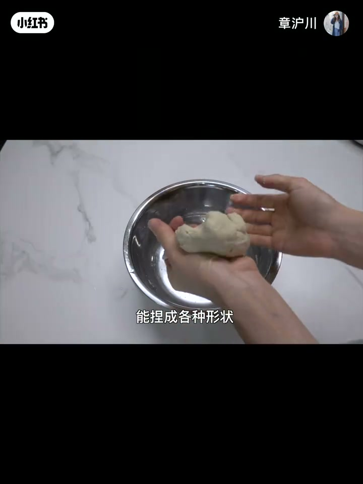
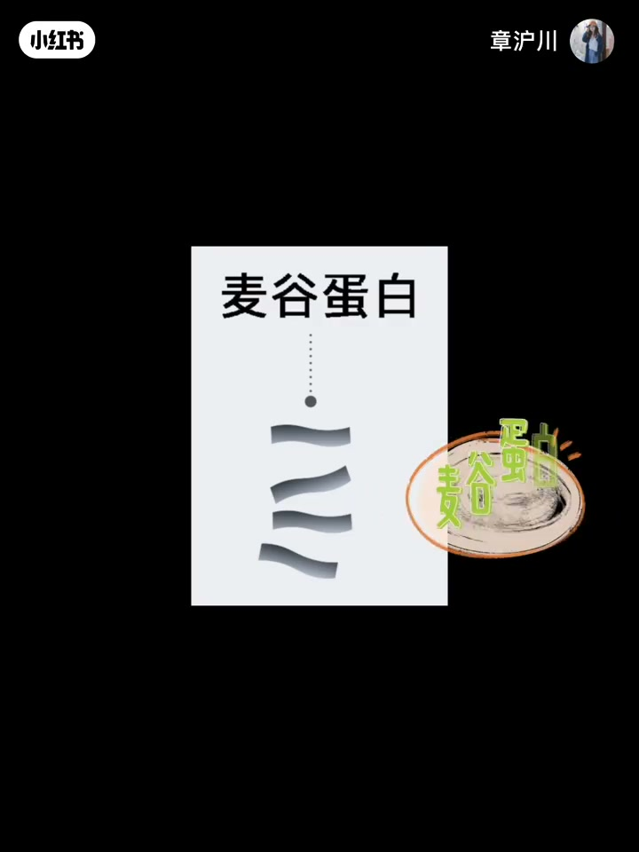
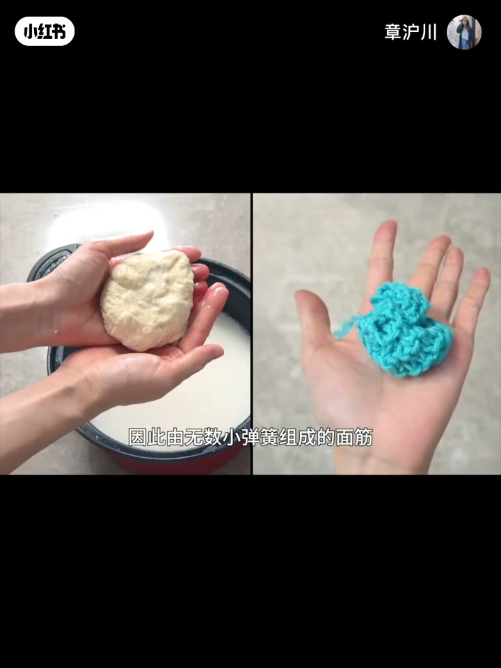
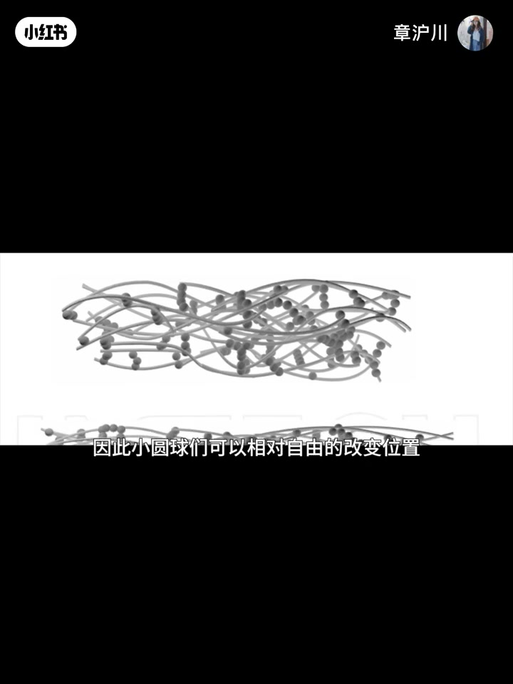
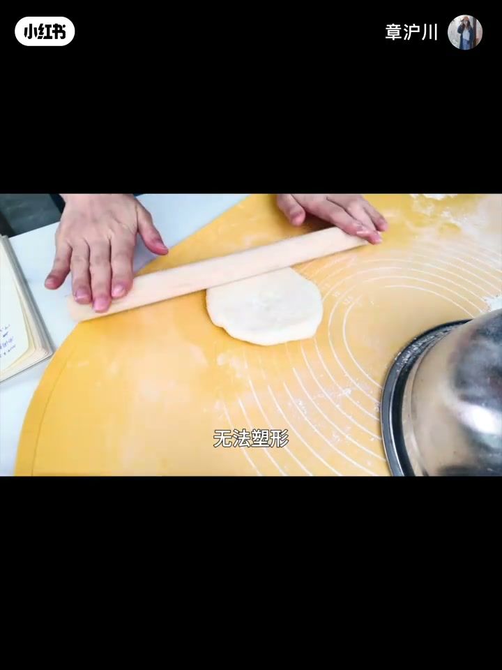
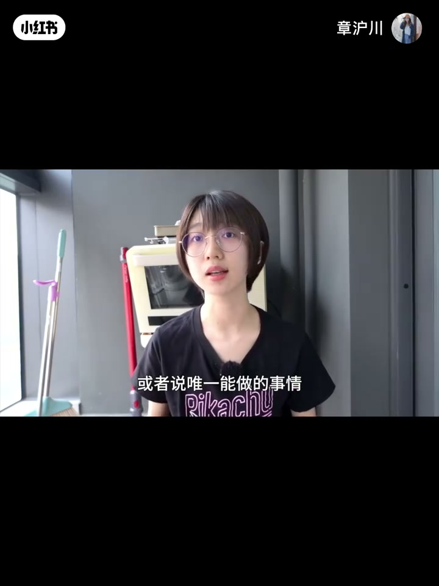
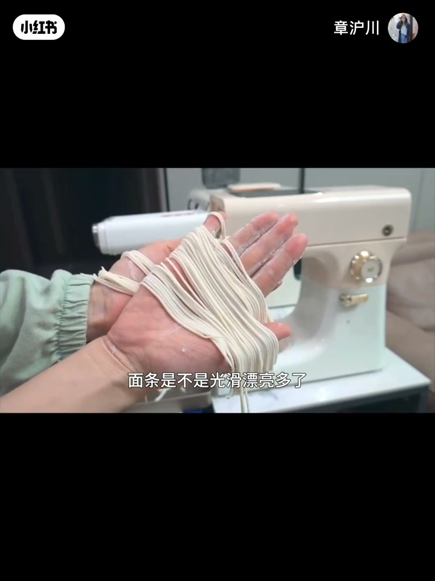
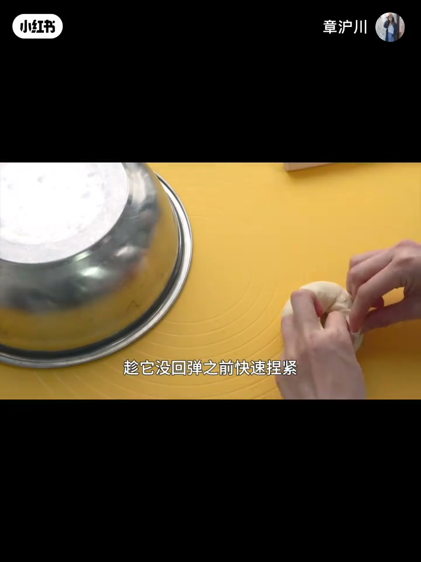
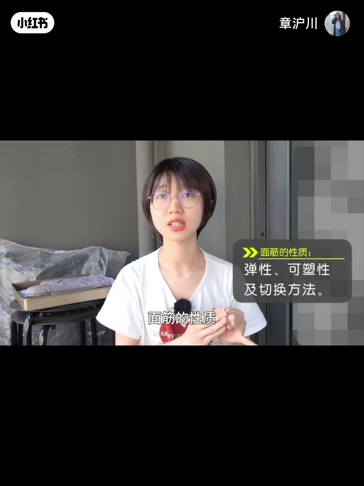

内容要点
章沪川「发面基础知识」第二期讲结构：洗面实验引出面筋（麸质／gluten），拆麦谷蛋白弹性与麦胶蛋白可塑性，解释二者为何不能同时最强——靠「松弛」切换状态。核心行动句：先松弛再整形；好搓就上、不好搓就放。
知识结构
同是加水，搓洗面团会多出可拉伸的面筋。
麦谷＋麦胶遇水反应生成面筋网；油麦粉无此能力。
弹簧网给弹性，胶状蛋白给可塑性；两者相反，靠状态切换统一。
中间饧发等待；硬面团可轻拉开快捏；压面机也要等。
成团前调水；本期为形状专题前置知识。
面筋是弹性与可塑性的时间切换，不是同时拉满；整形前先等松弛，硬搓只会撕网或回缩。
00:00-01:20洗面实验：多出来的神秘嘉宾
同盆面粉：加水搅成面糊可煮汤；若先揉成团再加水搓洗，本以为会融回面糊，却多出体积变小、色暗、表面粗糙却真实存在的一团——面筋。蒸炸烤拌都认识它。
面筋又名麸质，英文 gluten：能拉伸延展，有弹性韧劲，扮演面包骨架；没有它结构撑不住。

01:20-03:30为什么小麦粉「特异」
对比油麦粉：能成团造型，但不含面筋，像橡皮泥，包裹不住气体，一搓回糊。作者强调：在这颗星球上只有小麦有这本事，却因太常见被忽视。
成团是化学反应：原料是麦谷蛋白与麦胶（醇溶）蛋白；遇水后二硫键等把链连成网，并生成新物质——开头搓出的面筋就是产物。


03:30-05:40弹性网 + 可塑胶：相反却共存
麦谷蛋白像小绳子／小弹簧：死结（二硫键）加长，活结（氢键等）可拆可打，三维看是有弹性的立体网——回弹、撑起、像气球胀缩靠它。
麦胶蛋白像小圆球胶水：黏淀粉脂肪等却不黏死，位置可相对滑动，赋予黏土般可塑性。两者定义相反，面团不会在同一时刻又极弹又极软，而是状态切换。


05:40-08:20松弛：整形前唯一能做的事往往是等待
揉面越揉越弹、难擀，是麦谷主场；放着不动活结慢慢分开，面筋松弛，麦胶主场到来——「跟棉花一样没脾气」。面包整形前中间饧发 10–20 分钟就是为了切换；太久也是发酵，可能过度。
口诀：要先切换到面筋松弛状态再整形；好搓就上，不好搓就放。复杂造型可静置两三次。压面机硬压紧面筋会出破洞糙皮；轻柔排气分割可减少等待。硬低水面团可再等多到一小时，或轻拉开趁未回弹捏紧。




08:20-10:10水量窗口与系列预告
吐司法棍若也难松弛，先怀疑水少；但成团后再加水很难——黄金窗口在成团前，建议先调成面絮再上手。
本期讲面筋是什么／结构／性质，服务下一期形状与制作；形成、排筋、强弱、扩展阶段与塌陷放在系列最后一期。四期快完结。

完整转录（360段）
以下文本由 Whisper medium 模型自动转录，可能存在少量识别误差，已尽可能修正。
这是一盆面粉
如果往里加很多水 搅一搅
那我们便得到了一份面糊
放锅里煮煮
晚饭就可以喝面糊汤了
还是那盆面粉
如果我们把它加水
先揉成一个面团
再往里加很多水不停的搓
理论上来说
它应该会完全融到水里
变回原先面糊的样子吧
毕竟这两个操作
看起来没有什么实质的区别
然而奇怪的事情发生了
除了面糊以外
好像还多了一样东西
虽然体积越搓越小
颜色越搓越暗
表面越搓越粗糙
但可以肯定
这个多出来的东西是真实存在的
因为它就在你我的眼皮子底下
看得见 摸得着 还能吃得到
蒸着吃 炸着吃 烤着吃 拌着吃
诶 是不是越看越熟悉
对了 这位像孙猴子一样
从面粉里横空出世的神秘嘉宾
就是我们的老朋友 面筋
面筋也叫复制
英文名gluten
它能拉伸 能延展
有弹性 有韧劲
是素食
但吃起来却有肉一样的紧实口感
在面团里
它扮演着骨架的角色
要是没有这副骨架
面包的结构是支撑不起来的
比如说油麦粉
虽然也能成团
能捏成各种形状
但由于不含面筋
质地和橡皮泥一样
没有弹性 也包裹不住气体
放水里搓几下就变回面糊了
因此它不能像小麦粉一样花样摆出
变化无穷
主要使用方法是
摆个pose 蒸着吃
要是认真讨论起来
其实油麦粉这种材料正常
像小麦粉那样能召唤面筋的
反而是个奇形种
别说稀奇 简直是特异功能
在我们这个星球上
只有小麦有这个本事
但由于面粉实在是太普遍
太常见 历史太悠久了
很多人都没有意识到
召唤面筋这个过程有多么伟大
面粉能揉成团
好像和水 空气无处不在一样
稀疏平常
不平常 一点都不平常
你以为自己只是活了个面是吧
但实际上
你正在操控的是一个
无比复杂的化学反应
没错 面粉成团不是物理变化
而是一个不折不扣的化学变化
因为有新的物质生成
开头我们那个洗面实验里
不知道哪里来的面筋
就是这个化学反应的产物
根据质量守恒定律
以及巧妇南维5米之吹的道理
有产物也得有原料和条件才行
面筋的原料
是小麦面粉里两种特殊的蛋白质
一个叫卖骨蛋白
一个叫纯溶蛋白
在干燥的时候
它们就像你和你的邻居
谁也不认识谁
互不打扰 各自安好
不过一旦接触水
一股强大的势力
便在你的手上悄悄连接了起来
首先是卖骨蛋白
它是一个长长的链状结构
可以在吸水后手尾相连
通过二流腱形成更长的长链
链和链之间走得比较近
长得比较像的氨基酸
会因氢腱和分子间
收容力等力量结合在一起
一听这些
我知道很多朋友已经开始头疼了
怎么都毕业这么多年了
还是逃不掉被化学老师支配的恐惧
别担心 很简单的
一个卖骨蛋白
你只把它看成这么一根小绳子
小绳子两头靠牢固的二流腱结合在一起
就像打死结
结越打越多
绳子也越连越长
除了两头
绳子的侧面也有连结
就是前面说的氢腱啊
分子间作用链那些
这些力量有个特点
握
没有正经的化学腱那么牢固
可以理解为活结
很容易拆开
也很容易打上
就这样
小绳子们靠一堆活结
死结盘根错结纠缠在一起
放在三维空间去看
面筋就成了一张巨大的立体网络
这真是面筋的基本结构
要注意的是
它不仅是一张网
还是一张有弹性的网
因为小绳子
也就是脉骨蛋白
从微观上看
实际上是一个个小弹簧
能拉能伸
因此由无数小弹簧组成的面筋
也就拥有了它的第一个特性
弹性
有了弹性
面筋才能把面团撑起来
面团能被拉长
按压会回弹
还能像气球一样收缩膨胀
都是里面这些小弹簧在起作用
除了弹性
面筋还有第二个特性
可塑性
可塑性是我们刚刚说的第二种蛋白
纯溶蛋白富裕的
纯溶蛋白还有个名字
叫做麦胶蛋白
蛋白如其名
它和胶水一样黏糊糊的
揉面时会黏手
就是拜它所赐
它是像一个个小圆球
广泛的鲜现在面筋网络上
能把面粉里的其他物质
比如淀粉 脂肪 蛋白质等
全部黏在一起
但又不会黏得很死
彼此之间
以及和脉骨蛋白之间的间接
都比较微弱
因此小圆球们
可以相对自由的改变位置
种种特质
使得面团像黏土一样
具有相当优秀的可塑性
可以捏成各种形状
做成各式各样的面包
其实光有弹性或者光有可塑性
都没有什么特别的
厉害的是
它俩居然在同一个东西里存在
因为弹性和可塑性
完全是相反的两个特性
一个是容易被外力改变形状
另一个是不容易被改变
定义就很矛盾
面筋究竟是怎么做到
这种弹缩二向性的呢
关于这块内容
我思考了很久才想明白
想明白之后
越发感叹面筋的神奇与伟大
甚至觉得海贼王李路飞
不要吃橡胶果实
应该吃个面团果实
更牛逼
不仅能使出橡胶手枪
橡胶气球等技能
还能像孙悟空一样72变
手断了还能被脉胶蛋白粘回去
多厉害
稀有海贼王
有没有人想看
言归正传
面团的弹性和可塑性
就对矛盾的性质是如何统一的呢
其实不难理解
它俩并非同时出现
面团不会在同一个时间点
既弹性很强
又可塑性很强
这太拧巴了
就像你不可能同一时刻
既勤劳又懒惰一样
一般是在两种状态下
反复横跳不断切换
面筋也一样
揉面的时候会切换到弹性状态
越揉弹性越强
这时很难擀开
无法塑形
属于脉骨蛋白的主场
你要是硬擀
不好弄造型不说
还可能会把面筋擀断
只有在脉骨弹簧放松下来
弹性减弱时
可塑性才能展现出来
这就是我们在生活中
经常说的面筋松弛现象
此时就来到了脉胶蛋白的主场
该主场下
面团跟棉花一样没脾气
可以随意被我们捏成喜欢的形状
而面筋之所以能紧张或者松弛
背后原因就是我们前面说的
脉骨小绳子上的活结
揉面的时候他们很容易碰面
一碰面就打结
一打结面筋就紧
所以越揉面团越反骨
只要放着不动
等上一段时间
他们慢慢的就分开了
面筋也就松弛了下来
做面包的时候
我们经常需要把面团
从弹性切换到可塑状态
此时我们需要做
或者说唯一能做的事情
就是等待
这也是为什么
面包在整形之前
通常有一个中间饧发的步骤
一般要等上10到20分钟
就是为了切换状态
这个时间没有那么精确
静置到好感开好塑形就可以了
静置时间越长
面团就越松弛
可塑形和延展性就越好
但也不能太久
别忘了中间饧发也是发酵
太久可能会发酵过度
导致最后成品面筋支撑力
或者气泡组织不理想
要想做出外观好看组织漂亮的面包
在整形这个专题上
还是要大量练习才行
但核心其实很简单
就是我现在说的这句话
要先切换到面筋松弛状态再整形
好搓就上不好搓就放
这是一条很简单也很有用的建议
做任何面舌都适用
有些比较复杂的面包
整形时你甚至可以静置两到三次
每当处理到感觉面筋弹性太强时
你就适当松弛一下
做面包就是这么一个自由随性的事情
切记不好搓时不要硬搓
就连用压面机机械压面
你都要顺着面团的脾气来
面筋紧绷时就去压
压出来的面皮也是粗糙不平破洞百出的
一定要等一等
等到面筋松弛舒展再操作
瞧这样压出来的面皮 饺子皮 面条
是不是光滑漂亮多了
谁会等待时机
是做面食无上的哲学
但这也不是说一定要让你等很久
没事就等着
只要你动作轻柔一点
轻柔排气 轻柔分割 轻柔滚圆
不要每次都使劲大力揉面
让面筋紧回去
就能减少诸多不必要的等待时间
发酵时面团膨胀也有减弱弹性
增加可塑性的效果
所以随着发酵过程的进行
面团自然而然的就能松弛下来
如果能把这点利用好
有时可以直接跳过中间醒发步骤
节省时间
比如我上次给的简易吐司教程
就是排气后趁着面筋还松懈
立马分割成差不多相近的三个小长方形
然后整形擀卷
很快手 但做出来的吐司组织也很不错
中间醒发的时间除了和用的力道有关
还和面团含水量
以及面粉本身的筋性有很大的关系
如果面团比较干或者面筋比较强
有可能放很久还是会很紧
之前就有同学跟我说
面团都已经静置半小时了
但还是怎么赶怎么回缩
这是怎么回事 应该怎么办呀
这种情况在做被裹的时候特别常见
因为面筋特强
配方含水量又特低
类似的硬面包面团它就是很难操作的
你可以再增加时间
增加到一小时都别慌
中间每操作一次就静置一次
还可以轻轻的把它拉开
趁它没回弹之前快速捏紧
对 就是霸王硬上钩的意思
然后调低二发的温度
通过延长发酵时间来慢慢减弱面团的弹力
实在不行走个捷径
把面团揉好中间戳个洞拉几下
谁说这不是被裹的整形方法呢
但其他像吐司法棍这类的面包
如果你也这么难松弛难整形的话
有必要怀疑一下自己是不是水量太少了
这些面团含水量比较高
只要松弛到位不应该是很难擀开的
不过坏消息是
就算你知道自己水加少了也于事无补
太晚了 没有到整形时才加水的
一般揉面时水量就调整好了
面粉加水的黄金窗口期是在成团前
成团后里面都是一堆化学件
想再打开把水安排进去难度很大
除了一些含水量比较高的特殊面团
会在揉面后期才加水
其他我都建议大家养成一个
先初步调整好水量
再把面粉揉成团的习惯
也就是先搅成面絮 再上手揉面
如何在面絮状态就能判断水量有没有调整好
这个也是需要一些经验的
日后我会带大家一起练习
这期内容我讲了面筋是什么
面筋的结构 面筋的性质
可能有点枯燥
不过大概是我下一期讲面包形状
和制作时的重要前置知识点
关于怎样形成面筋 排练面筋
以及如何增强和减弱筋性
还有面筋的各个扩展阶段是什么意思
面包塌陷是为什么 该怎么解决等等
我将在发面基础知识最后一期为你讲解
这个系列是上中下加时操一共四期
快完结了
希望这些内容对你们做面包有帮助
我是张悟川 下期再见 拜拜